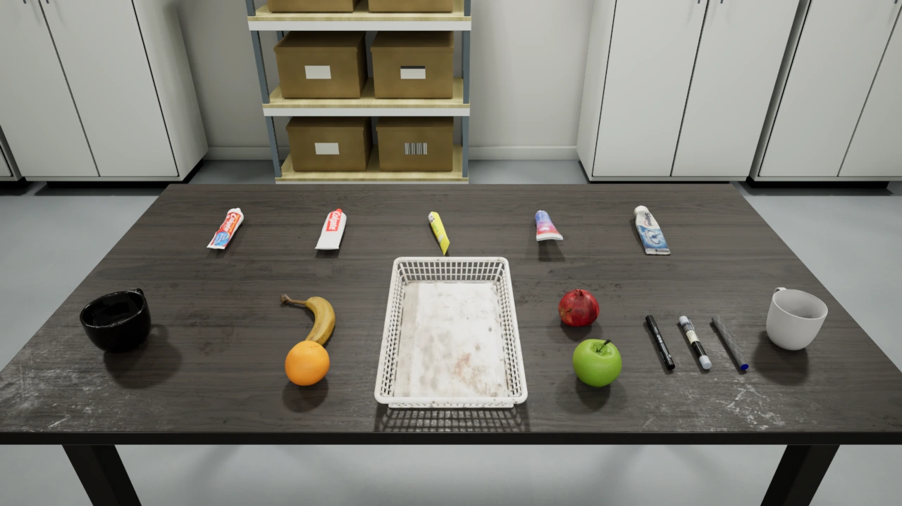
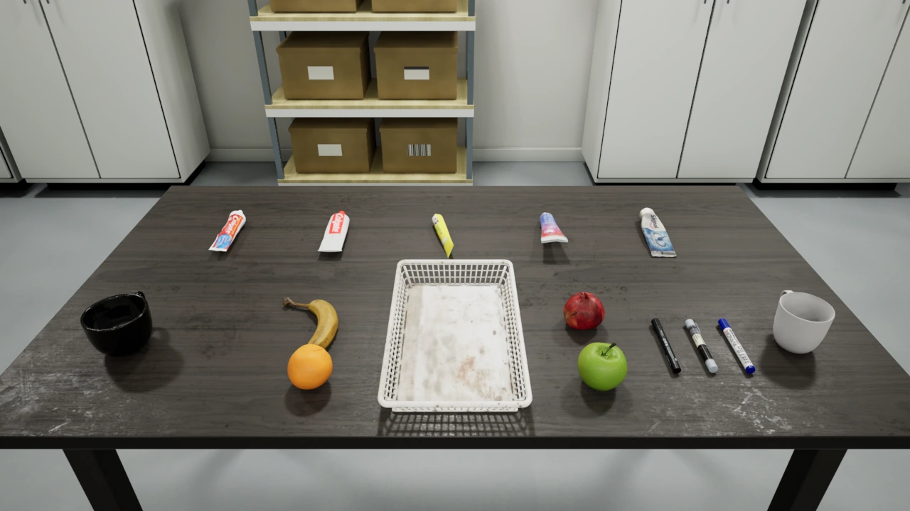

黑色记号笔
得力 No.6881
旧名 black_marker · 长度 14.00 cm两张高清照片重做印字；图一重复两遍、图二一遍，形成三个 120° 环向区域。
photo_pen_deli_6881一段桌面视频，九张补拍近照。记录得力 6881、白雪 WB598 与晨光 D10 从重建、平顺化、照片贴图到 UE5 抓取场景的实际制作过程。
两张高清照片重做印字；图一重复两遍、图二一遍，形成三个 120° 环向区域。
photo_pen_deli_6881四张近照更新整圈标签，并按实物轮廓补建笔夹。透明部分保留照片外观。
photo_pen_snowwhite_wb598三张近照替换视频贴图，恢复正面图案、背面型号与条码；最终颜色为蓝白。
photo_pen_mg_d10尺度依据：用户确认得力黑笔长 14 cm，白雪与晨光沿用同一重建比例，尚未分别实测。早期“紫白色笔”“透明双头笔”是工作名，不代表另有两款资产。
输入为用户视频 3pens.mp4。原会话记录其约 16.07 秒、960×544、30 fps；前 14.8 秒筛出 111 张清晰帧。MeshSplatting 输入清单确认了 111 张图像与去畸变后的 PINHOLE / COLMAP 标定，图像为 957×542。S01
排除末尾遮挡与明显模糊，完成多视角标定。
检查三支笔与桌面重建外观，保留未拍到底面的事实。
Metric3D 法线输入；MeshSplatting 30,000 步，室内模式与留出评估。
三视角分割，剔除桌面、碎片后输出三份原始网格。
| 训练环境 | NVIDIA GeForce RTX 4090 · PyTorch 2.7.1+cu126 · CUDA 12.6 |
|---|---|
| 参数 | --indoor --eval --data_device cpu --iterations 30000 --scene_name 3pens；GPU 内存比例上限 0.8 |
| MeshSplatting 提交 | 2a810a6c353215685307da3d4cc6ebd73b1c387b |
| 完整场景原生渲染 | PSNR 29.7386 dB · SSIM 0.944407 · LPIPS 0.172133 |
| 早期 3DGS | 原会话记录约 18 万高斯、裁剪版约 5.6 万；12 个留出视角 PSNR 32.16 dB。此次未回收 Brush 最终训练原报告或精确版本。 |
MeshSplatting 指标来自完整场景训练报告，不代表后续平顺网格的几何误差；两个阶段采用不同留出集，数值不作优劣排序。S02S03S04
| 资产（当时工作名） | 原始三角面 | 原始非流形边 | 平顺版检查 |
|---|---|---|---|
| 得力 / black_marker | 63,713 | 21,314 | 0 非流形边 · 0 退化面 |
| 白雪 / clear_double_marker | 50,733 | 16,686 | 0 非流形边 · 0 退化面 |
| 晨光 / purple_white_marker | 56,332 | 19,818 | 0 非流形边 · 0 退化面 |
上图左右均为修正后的同一版，分别显示纹理与灰模；不是“修前 / 修后”配对。此次未取得独立的原始毛刺网格渲染图，因此以提取报告列出原始状态。Blender 5.2.1 LTS 的历史报告确认了重开、UV、内嵌贴图与网格检查。S05S07
视频贴图里有模糊字样、白色端缘与固定亮条。后续改用真实近照的印字、图案和条码，排除手指与桌面，再单独处理基础色与粗糙度。原图均为 5712×4284；本页内嵌其展示副本，文字贴图维持独立来源。S08
正面采用 “WHITE BOARD” 图案；第二、第三张提供背面说明、型号与条码。对背面照片做环向与轴向对齐，修整交界错位和穿过文字的细高光。
“purple_white_marker” 沿用早期文件名；模型身份已确认是晨光 D10 蓝色白板笔。S14
保留更多拍摄外观，清除白边，抑制固定长条高光。
减少照片光照残留，保留文字和条码，以灯光计算塑料表面反射。
更强的色块清理和更高粗糙度；白雪内部外观细节相应减少。
底面补全方式随资产不同：得力遵循 2:1 排布，白雪非标签区域复用上半圈，晨光未覆盖间隙补白色。它们不是额外拍摄得到的完整底面。
得力长度设为 0.14 m，公共缩放因子 0.0627789751；+X 从笔头指向笔尾，底部置于 Z≈0，使用米制导出。
将笔身和笔夹合并，保留原材质槽，未做几何简化。GLB 保存可查看模型；FBX 采用 -Y Forward / Z Up；颜色与粗糙度 PNG 分开输出。
使用 Static Mesh FBX 导入，保留法线与切线、进行场景及单位转换；关闭自动碰撞和自动 Lightmap UV。导入后包围盒与米制源数据误差要求小于 1e-5 m。
历史 UE5 记录：5.8.2-56702186；Lumen / Metal / Movie Render Queue，1280×720，16 个空间采样、48 帧预热。保留原有场景物体与灯光，新增三支笔。S19
| 最终资产 | 长度 | GLB 三角面 | 碰撞几何数 | 稳定资产 ID |
|---|---|---|---|---|
| 得力 No.6881 黑色记号笔 | 14.00 cm | 35,328 | 2 | photo_pen_deli_6881 |
| 白雪 WB598 透明白板笔（带笔夹） | 13.38 cm | 37,420 | 9 | photo_pen_snowwhite_wb598 |
| 晨光 D10 蓝色白板笔 | 13.86 cm | 35,328 | 2 | photo_pen_mg_d10 |
得力、晨光各用两个轴向圆柱碰撞体；白雪使用一个主体圆柱和八段笔夹盒体，保留夹臂间隙。模型设为可抓取自由刚体，10 g 包含笔帽与笔夹。质量与重心来自用户指定，摩擦和惯性分布采用仿真估计。S15S21


仅放大已有渲染的笔所在区域。两张源图的相机与构图一致；下方保留完整画面。
以下制作与验收结论均来自项目保存的报告。本次归档复核了图片像素、身份映射、关键文件哈希和 HTML 离线资源；没有重新训练、建模、运行抓取或部署。
平顺版：零非流形边、零退化面，UV 有效，贴图内嵌且文件可重开。材质 v2：主体几何与 UV 保持一致，八个交付 Blender 文件通过记录中的验证。
MuJoCo 3.9.0，每支累计 45 秒 / 45,000 步：三个姿态下落与滑动，以及 9 秒限力平行夹爪抬升、释放。最小保持抬升约 15.94–15.95 cm。
独立夹爪测试不等于机器人特定抓取验收。Linux GPU、连续视频、控制器与抓取验收按当时用户要求跳过，报告为 passed: null，不记为通过。
delivery/raw_meshsplatting/；delivery/{black_marker,clear_double_marker,purple_white_marker}.blendmaterial-v2/delivery/3pens_all.blend、3pens_material_compare.blend、三支独立文件与 variants/Wizard/assets/captured/3pens-20261010/{asset}/prepared/model.glb、asset.blend、preview.pngnative/SM_Pen_{asset}.fbx、颜色与粗糙度图及 source.jsonOfficeGrasp/Tabletop/Meshes/SM_Pen_{asset}.uasset；Materials / Textures 中保留依赖。physics/model.xml、physics.json、geometry.json 与 OBJ 视觉网格。这里列出来源工程中的产物，HTML 内嵌的是图片与流程资料；未重复打包网格、训练状态或大型原生资产。
原会话：转换为3D高斯（2026-10-10）。下列路径均为项目相对索引，不用于加载图片。29 张不同来源图片的处理方式、SHA256 与资产指纹已内嵌在本 HTML，可导出索引留存。
4090/delivery/provenance/input-manifest.jsonSHA256 1b8dc43da6c05dfca03493b0c7d1e3a48f48fe00d57339c19228687fbf9ca2684090/delivery/provenance/train-run.jsonSHA256 656890aded1f65b8ca6c0d64fd15427b19200a4a56fbb7579e9301fbc7e542404090/delivery/provenance/results.jsonSHA256 b34fb4341f92e97966b84e4928b81ba201cd461b0d2f0923de1df1191b7d0a5d4090/delivery/provenance/extraction-report.jsonSHA256 5c6a96689fadb752acdfad92fad66dcd0e87dc4319282f0c458db19c9abcc5664090/delivery/provenance/final-blender-validation.jsonSHA256 69e1237b13b7906a9f661ef1db75200c682ec8f6ce304c5cf84e4e8c985bbd964090/delivery/provenance/surface-smoothing-report.jsonSHA256 27ac628a4461625beadf9db01586f7bead63e030bdef16d971f8a2dc31f639604090/delivery/provenance/texture-bake-report.jsonSHA256 c35f31c45e3d7938cb5d7f96b98ed0672014794a3c6951512f5accc7740884d94090/material-v2/delivery/README.txtSHA256 11b16cac722f2755570ecfccb2999febd974764a9c83301d55c2998d6a0cb1d24090/material-v2/delivery/provenance/blender-validation.jsonSHA256 394ded0769c500fe964139ecc0690ec3f4c4d5e46e07c42976eda907833115c54090/material-v2/delivery/provenance/deli-layout-validation.jsonSHA256 4131ec85619a1dbacc4db33d469a1e5d30a5e0f32856da5816364b934007df2f4090/material-v2/delivery/provenance/relight-validation.jsonSHA256 7b0f471387c4d2f0cdc3f1118ea0eab5988533d6bf280d3f6f92ff4398edb8324090/material-v2/delivery/textures/deli-photo-projection.jsonSHA256 592165d2daaf7153c82bd8dfb0175ede1d45c805ef824069aba75895c5bbb61e4090/material-v2/delivery/textures/snowwhite-photo-projection.jsonSHA256 d9359d52dda658bf04543deb8afbfd244bb56dff8b59dbbf90129ef0521b54ab4090/material-v2/delivery/textures/whiteboard-photo-projection.jsonSHA256 5c45800c068ecef2fbebdeab44b5e666faeeed6a63e23fea75d5302ac5a261d4Wizard/assets/captured/3pens-20261010/selection.jsonSHA256 4c95e6f5f36303a49bac1f9711535c525be841c642b31c854bb2270818319b4dWizard/scripts/3pens_release_20261010/export_assets.pySHA256 04f1a95302c490743920611bbacb7fcf6e61c12e455663d5601e608bfc2f5d94Wizard/scenes/office_grasp/author_pens_ue.pySHA256 4d0ae9531f5bd20dbbc135b3570aff9431f7200ce5b4ac0bf32b4a6956df9b79Wizard/evidence/3pens-release-20261010/validation/color-import-fix.jsonSHA256 b1add72da3706eaa6b1bbc1e691ff966f23f6bf8faae320d3d1591a00f9062bcWizard/scenes/office_grasp/validation/pens-20261010/ue-capture.jsonSHA256 564804489efb32b950d87a17d42954d35be314d5f1a784c3925e84327fa7fe35Wizard/evidence/3pens-release-20261010/local-visual-review.jsonSHA256 073a4d80fffe8ef4e6692b90b0dd0debdef93b70563115b22fef84adcfcd264dWizard/evidence/3pens-release-20261010/validation/physics/summary.jsonSHA256 6c4f71da521e5706f7925f500556f3ecc46c6f7e46c77ff846404bb16f7a23d7Wizard/evidence/3pens-release-20261010/4090/acceptance.jsonSHA256 86a643c961361b1c0bb311465ea09cfad01ccc240bae81bd512dc36952a315e2Wizard/evidence/3pens-release-20261010/source-files.jsonSHA256 88b3300992bc0b212abcfc3f7067a537ff01d166b6f7c7946192200274396284阅读方式：点击任意图可放大；照片组和详细证据可按需展开。页面不调用外部字体、脚本、图片或数据接口，单个 HTML 文件即可换机查看。
资料来源于既有项目归档。原始文件清单、历史大小和校验值描述归档源文件；本站部分视频为保留完整时长和画面的兼容播放副本。